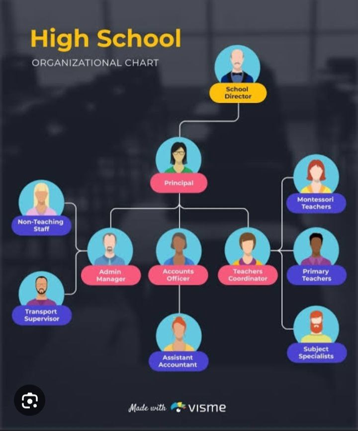

የኮሌጁ መዋቅር
ሉሲ ኮሌጅ በተደራጀና ግልጽ በሆነ መዋቅር የሚመራ ሲሆን፣ የትምህርት ጥራትን እና አስተዳደራዊ ቅልጥፍናን ለማረጋገጥ የተመሰረተ ነው። ከዚህ በታች የኮሌጁን አጠቃላይ የድርጅት መዋቅር የሚያሳይ ንድፍ ቀርቧል።

የአመራር አካላት
የሉሲ ኮሌጅ አመራር የሚመራው በፕሬዝዳንቱ ሲሆን፣ ምክትል ፕሬዝዳንቶች እና የተለያዩ ዳይሬክቶሬቶች ድጋፍ ያደርጋሉ።
- ፕሬዝዳንት
- የአካዳሚክ ጉዳዮች ምክትል ፕሬዝዳንት
- የአስተዳደርና ፋይናንስ ምክትል ፕሬዝዳንት
- የሰው ሃብት ዳይሬክቶሬት
- የፋይናንስ ዳይሬክቶሬት
የትምህርት ክፍሎች እና ፋኩልቲዎች
ኮሌጁ በተለያዩ የትምህርት ዘርፎች ላይ ያተኮሩ ክፍሎች እና ፋኩልቲዎች አሉት።
- የኮምፒውተር ሳይንስ ዲፓርትመንት
- የቢዝነስ አስተዳደር ዲፓርትመንት
- የሂሳብ እና ኦዲቲንግ ዲፓርትመንት
- የጤና ሳይንስ ዲፓርትመንት
የድጋፍ ሰጪ ክፍሎች
የኮሌጁን አጠቃላይ አሰራር የሚደግፉ የተለያዩ ክፍሎች ይገኛሉ።
- የተማሪዎች አገልግሎት
- ቤተ-መጻሕፍት አገልግሎት
- የጥበቃ እና ደህንነት ክፍል
ይህ መዋቅር የሉሲ ኮሌጅን የዕለት ተዕለት ተግባራት በብቃት ለማከናወን እና ለተማሪዎቻችን የተሻለ አገልግሎት ለመስጠት ታስቦ የተዘጋጀ ነው።